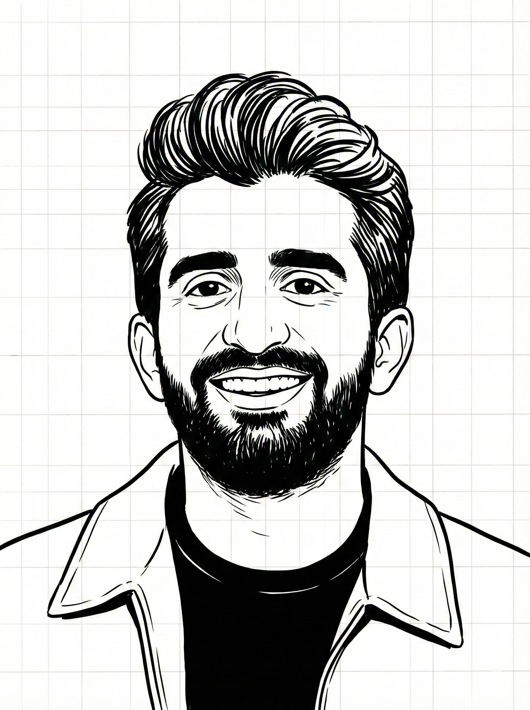

hey, i'm usman ★
All grown organically — zero ads, 21+ countries.

Product, UX, brand identity — making the complex feel obvious.
product thinkingStartups, products, systems — turning vision into things that work.
brand identityOrganic communities in 21+ countries — $0 ads, just design that works.
community architecturewhere all three meet — that's where the magic happens
The through-line?
Make it clear. Make it real. Make it grow.
Not separate skills — one way of seeing. When something is designed right, people don't need convincing. They just show up. They stay. They bring others.
Not interfaces. Decisions made visible. From first prototype to the version users actually trust. The kind of design that makes people feel smart for using it.
That feeling when you see a brand and just get it? Not luck. Strategy made invisible. No mood boards. No "brand essence workshops." Just clarity.
BYOC — entrepreneurs, investors, creators across 21+ countries. Zero paid ads. Communities don't grow from content calendars. They grow from shared identity, designed with intent.
For founders and teams too close to see the problem. The questions that got skipped. The clarity that got buried. Then — build the answer together.
Everyone's optimizing funnels. The real question: is the thing worth sharing in the first place?
Organic growth isn't a tactic here. It's a filter.
If a product needs paid ads to survive day one — the product isn't ready.
If a community needs incentives to stay — it's not a community yet.
Build the thing worth talking about. Growth becomes the side effect.
There's a difference between telling someone how to build and having built it yourself.
A global community of entrepreneurs, investors, and creators. 21+ countries. Purely organic. No ad spend. No growth hacks. Just a space designed well enough that people brought others in themselves.
Description of your entrepreneurial venture — what it is, why it exists, and what it proved about your approach.
Description of another venture — the story, the insight, the outcome.
"Add a powerful testimonial quote here from someone who's worked with Usman."
— NAME, TITLE, COMPANY
Started as a group chat. Now a global network across 21+ countries. No referral programs. No paid campaigns. A space designed so well that members became the growth engine.
Group chat → 21+ countries. Pure organic.
What was broken → what was seen that nobody else saw → what shifted. Tell the story of the transformation, not the deliverables.
[Outcome in one line]
The trust problem → the design intervention → the result. Every case study is a short story about what changed and why.
[Outcome in one line]
Most people hire a strategist, then a designer, then a growth person. Three conversations. Three invoices. One diluted outcome.
What if the person asking "why are we building this?" is the same person up at midnight getting the kerning right?
Not a contradiction. The whole point.
Founders building something they actually believe in
Startups where the product is better than the story
Governments and institutions that want trust, not just a deliverable
Anyone building community who's tired of "engagement strategy" playbooks
Not an agency. Not a vendor.
The person you bring in when it needs to feel right and work right.
Share what's being built. If there's a fit, the how becomes obvious. If there's not, that honesty is free.